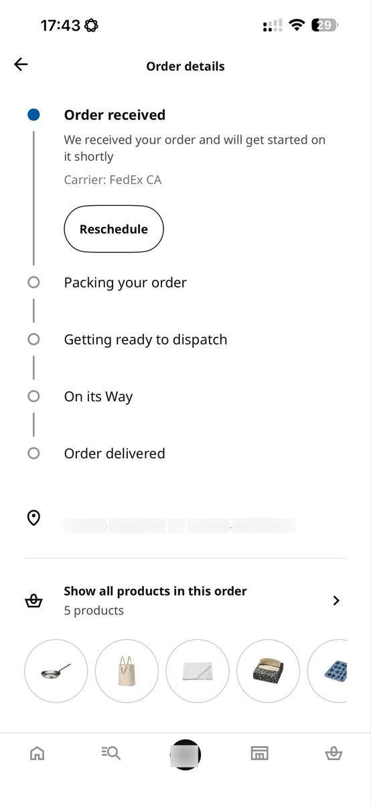

小虚空🍥
@tokerumaisurii
我想到更好笑的事情，我用的转运公司平均八天左右到加拿大，京东下单宜家到转运公司的广东仓要四天（如果江浙沪只要两天），也就是说我就算不远两万里从中国买过来都只比这两百多公里的慢一两天欸。窝们加拿大什么时候能好起来呢。

小虚空🍥
@tokerumaisurii
已经过去两个完整的工作日了，订单还在已接单状态一动不动，然后我9月2号凌晨下单的时候告诉我预计送达时间是9月12号，如果真是这么慢的话，我走路去最近的有宜家店的城市买完走回来都比这快吧。以及好像又是一个北美没车寸步难行的例子，除非你认为从省内城市买点有现货的小家具要十天到是可接受的。 https://t.co/ybQGFQVI2k